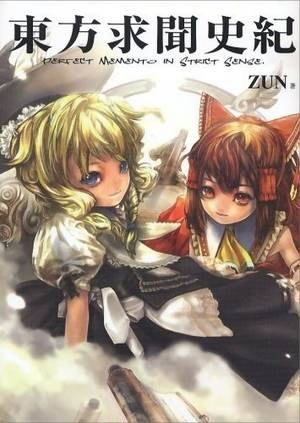
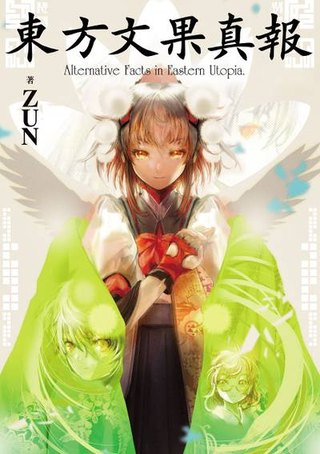
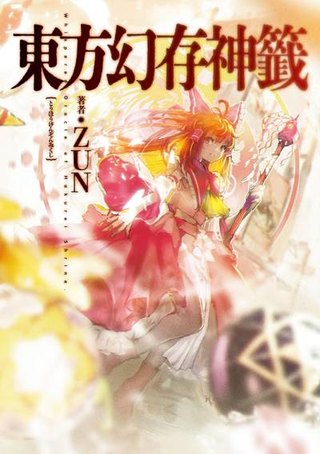
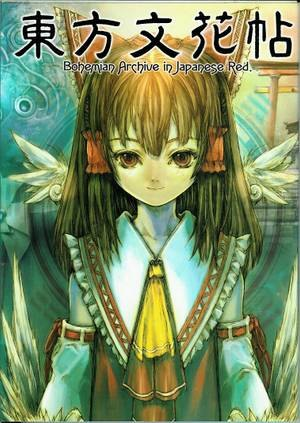
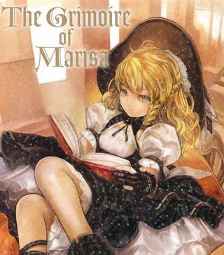
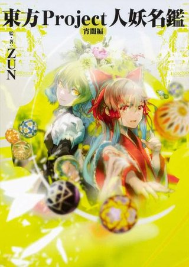
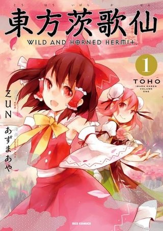
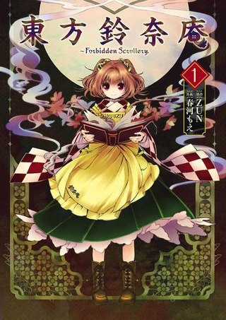
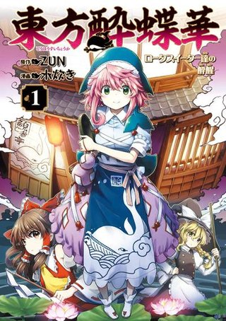
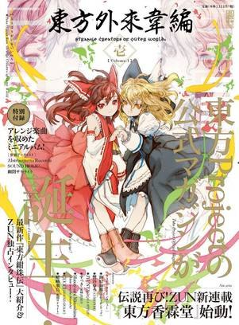

首页 > 官方书籍
官方书籍大体分为四类：设定资料集、Fanbook 与画集、官方漫画、官方杂志。
它们大多由 ZUN 监修或撰写文字，是了解幻想乡设定与角色日常的重要资料。
本页从众多出版物中精选 11 部代表作。
设定资料集
Data Books
东方求闻史纪
Perfect Memento in Strict Sense.
由稗田阿求以「幻想乡缘起」的体例撰写，系统介绍幻想乡的妖怪、地点与历史，是系列最重要的设定集之一。
东方求闻口授
Symposium of Post-mysticism.
《求闻史纪》的续篇，以「口授」的形式补充新角色与新设定，由多位角色参与讨论。

东方文果真报
Alternative Facts in Eastern Utopia.
以报纸形式整理幻想乡的报道与设定，收录大量插画与短篇，风格轻松幽默。

东方幻存神签
以「御神签」的形式逐个介绍角色，附漫画与设定解说，是近年最新的官方设定集。
Fanbook 与画集
Fanbooks
东方文花帖
Aya Shameimaru's Newspaper
以「文文。新闻」的形式收录对幻想乡各角色的采访与报道，并附四格漫画、专栏与 ZUN 访谈，是了解幻想乡人情的第一手资料。

魔理沙的魔法书
The Grimoire of Marisa
魔理沙整理的符卡图鉴，按作品收录各 BOSS 的符卡与 ZUN 的点评，兼具资料与吐槽的乐趣。

东方Project人妖名鉴 宵暗篇
以插画与解说介绍历代角色，宵暗篇收录前半部分角色，画集性质浓厚。
官方漫画
Comics
东方茨歌仙
Wild and Horned Hermit.
以茨木华扇为主角的官方漫画，描绘幻想乡的日常与异变，连载时间长、角色众多。

东方铃奈庵
Forbidden Scrollery.
以本居小铃与铃奈庵书店为中心，讲述「妖魔本」引发的种种事件，气氛悬疑而温柔。

东方醉蝶华
以居酒屋「鲵吞亭」的店花奥野田美宵为主角，围绕幻想乡的美酒与酒客展开一个个小故事。
官方杂志
Magazine
东方外来韦编
Strange Creators of Outer World.
官方不定期刊行的杂志，收录 ZUN 访谈、设定解说与二次创作漫画，是了解东方幕后故事的重要刊物。